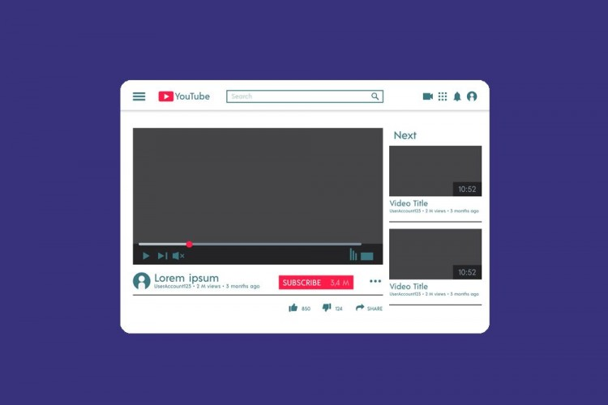

Desain Grafis
Desain grafis atau rancang grafis adalah proses komunikasi menggunakan elemen visual,
seperti tipografi, fotografi, serta ilustrasi yang dimaksudkan untuk menciptakan persepsi
akan suatu pesan yang disampaikan. Bidang ini melibatkan proses komunikasi visual dan desain komunikasi.

Web Desain
Perancangan web adalah istilah umum yang digunakan untuk mencakup bagaimana isi web konten ditampilkan,
yang dikirimkan ke pengguna akhir melalui World Wide Web, dengan menggunakan sebuah browser web atau perangkat
lunak berbasis web.

Video
Video adalah teknologi pengiriman sinyal elektronik dari suatu gambar bergerak. Aplikasi umum dari sinyal
video adalah televisi, tetapi dia dapat juga digunakan dalam aplikasi lain di dalam bidang teknik, saintifik,
produksi dan keamanan. Kata video berasal dari kata Latin, "Saya lihat".